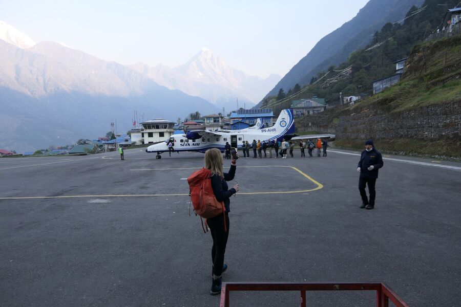
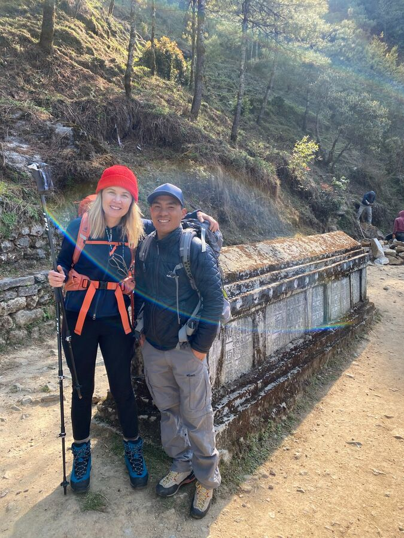
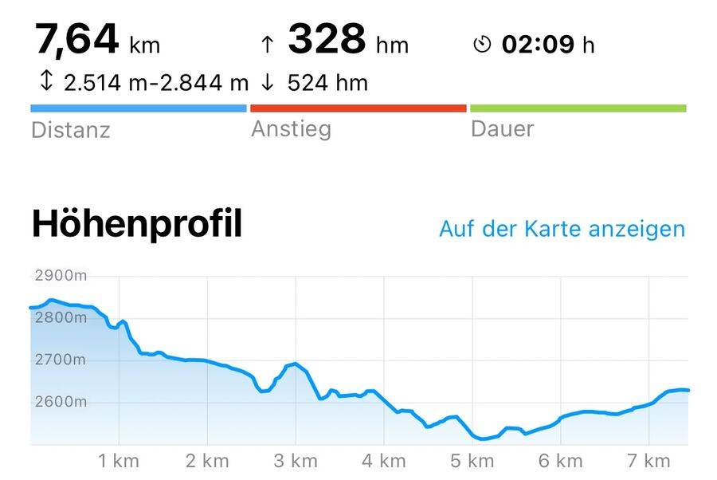
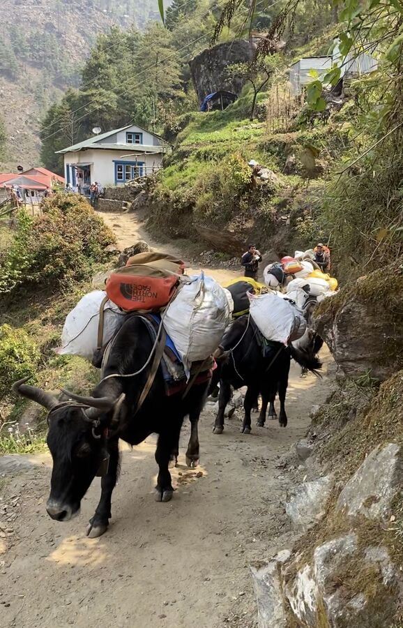
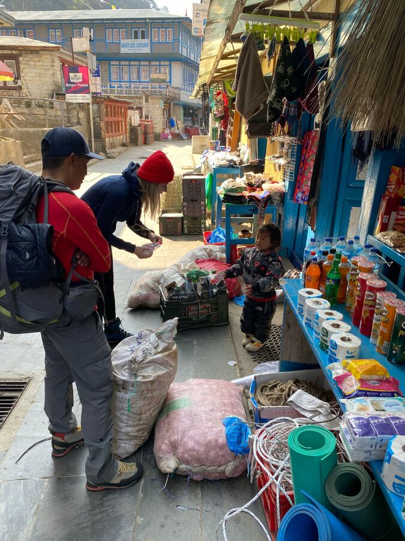
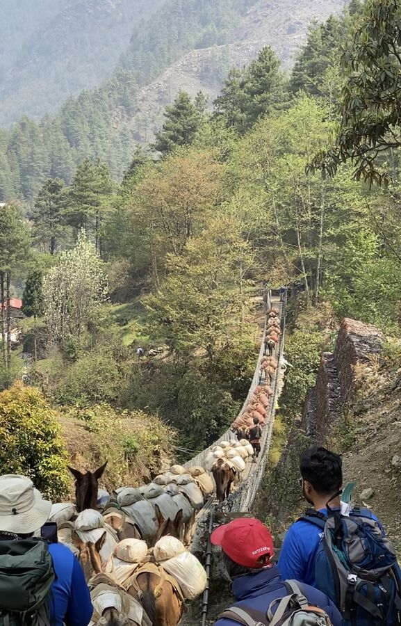
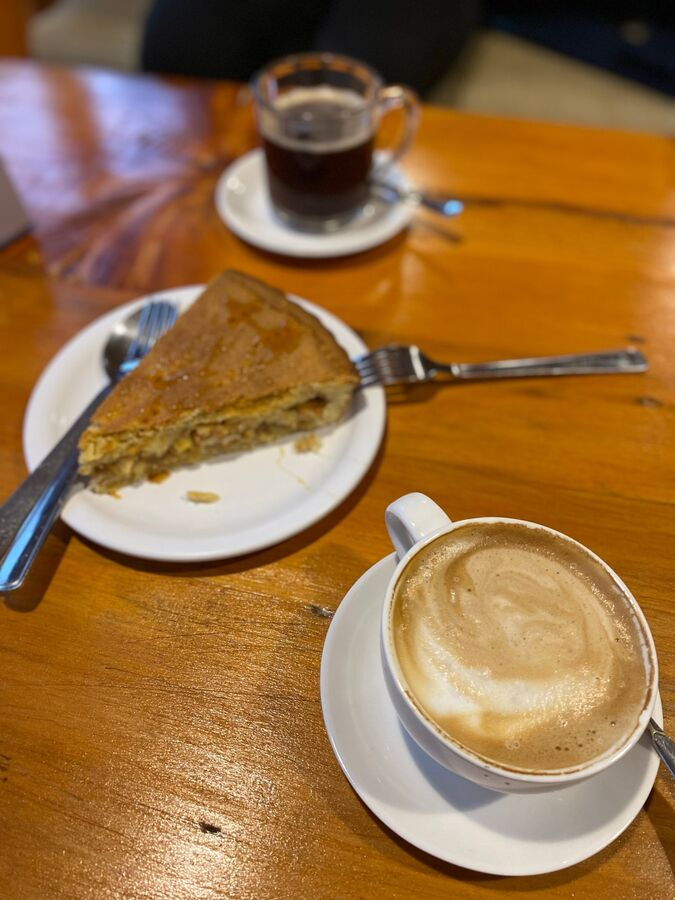

Die Nacht vor dem Start der Trekking-Tour war kurz. Wahrscheinlich habe ich nur 3 Stunden richtig geschlafen. Ich hatte ja um 22 Uhr das Licht ausgemacht, da war es in Deutschland gerade mal 18:15 Uhr. Totmüde schlief ich zwar ein, wachte dann aber schon um 0:00 Uhr wieder auf. Um dann 2 Stunden lang nicht wieder einschlafen zu können. Erst so gegen halb 3 muss ich wieder eingenickt sein. Der Wecker bimmelte dann um 3:30 Uhr.
Duschen, Anziehen, Sachen verstauen, dann runter in die Lobby. Wir bekamen ein Lunchpaket, welches wir noch zu uns nahmen, dann kam um 4:45 Uhr schon der Transfer. In dem saßen bereits Gäste aus den USA, Canada und Brasilien.
Der Weg zum Inland-Terminal des Flughafens dauerte ca. 15 Minuten. Der Check-in samt Gepäckkontrolle, Aufnahme der Personalien und Wiegen dauerte fast 1 Stunde. Übergepäck – man darf 10 + 5 Kilo mitnehmen – muss bezahlt werden. Das kostete uns 1.000 Rupien (8€). Gegen 6 Uhr saßen wir in dem Bus zum Flugzeug und bald darauf auch im selbigen. Es war eine sehr kleine, zweipropellige Maschine mit je einem Sitz links und rechts.
Der Flug selber war in Ordnung und dauerte ca. 30 Minuten. Es war sehr diesig, so dass wir trotz Sitz auf der linken, richtigen Seite kaum etwas sehen konnten. Erst gegen Ende des Flugs konnten wir einige Berge erkennen.
Die Landung war hart und kurz. Sollte sie auch, weil die Landebahn bekanntlich an einer Felswand endet.

Nach dem Ausstieg kamen wir mit den anderen Passagieren in der Buddha Lounge zusammen und lernten unseren Führer Naran kennen. Er ist 33 Jahre alt und stammt aus Lukla.

In der Buddha Lounge bekamen wir ein Frühstück serviert, Rühreier, Omelette, Kaffee und Tee. Nach etwas Ausruhen und netten Kennenlern-Gesprächen mit den anderen Mitreisenden machten Naran, Yesim und ich uns dann kurz vor 8 Uhr auf den Weg. Unser Gepäck (je 11-12 Kilo) war inzwischen schon von einem recht schmächtig aussehenden Träger geschultert und weggetragen worden. Wir würden es erst später in der Lodge wieder sehen.
Die Strecke verläuft zunächst etwas ansteigend oberhalb des Flughafens entlang und dann an einigen netten Geschäften in Lukla vorbei. Hinter Lukla wird man dann an einer Polizeistation angemeldet. Das erledigt der Führer. Dahinter geht es dann erst einmal bergab. Insgesamt läuft man von ca. 2.800m in Lukla bis auf 2.600m in Phakding herunter.

Was sich vielleicht einfach anhört, ist aber in Wirklichkeit ganz schön schwierig. Der Weg ist sehr uneben. Man muss sich konzentrieren, damit man nicht irgendwo umknickt. Teilweise muss man große Schritte machen. Dauernd kommen einem Esel oder die hier für den Transport in geringeren Höhen genutzten Rinder, Jopke, entgegen. Natürlich geht es streckenweise auch bergauf.

Das Wetter war sehr schön, vor allem, als die Sonne herauskam. Einen Teil des Weges sind wir nur im T-Shirt gelaufen, später auch mit langärmligen Shirt oder Fleecejacke. Zwischendurch kam auch starker Wind auf.
Die Umgebung ist unheimlich schön. Alles sehr grün und ruhig. Die Menschen in den Dörfern, durch die man läuft, sind oft freundlich oder einfach zurückhaltend. Viele ganz kleine Kinder oder auch Hundewelpen haben wir heute gesehen. Einigen Kindern schenkten wir Buntstifte, die wir aus Deutschland mitgebracht hatten. Die Kinder freuten sich unheimlich, bedanken sich artig und liefen mit ihrer Beute dann schnell weg.

Ein Highlight war die erste Hängebrücke aus Stahl. Vor uns war gerade ein Treck mit beladenen Eseln, der auf die Brücke bog. Dahinter dann direkt wir. Eine sehr wacklige Angelegenheit. Morgen werden wir dann 5 Brücken überqueren.

Um 11:45 waren wir dann in der „See You“-Lodge, in der wir heute übernachten, angekommen. Dort aßen wir etwas Linsen, Reis und Curry und zogen uns dann erst einmal in unser Zimmer zurück. Es ist ein Bretterverschlag mit einer tollen Aussicht zum Fluss hin. Es gibt 2 Einzelbetten und Bettwäsche. Es ist natürlich sehr zugig. Der wilde Fluss ist auch ganz schön laut.
Wir sind wie Steine eingeschlafen und erst wieder gegen 16 Uhr aufgewacht.
Dann machten wir uns noch einmal auf zu einem kurzen Spaziergang durch Phakding. Der Ort ist etwas größer und hat viele kleinere Geschäfte, Cafés, Bars und Lodgen. Er liegt in einem Hang. Wir kauften 2 Äpfel (200 Rupies = 1,50€) und kehrten in einer gerade neu gebauten Bäckerei ein. Dort gab es warmen Apfelkuchen, Kaffee und Cappuccino (1.050 Rupien = 8 EUR). Alles durchaus lecker.

Zurück in der Lodge unterhielten wir uns noch mit den anderen Guides und den Mitreisenden. Unsere Truppe aus USA und Canada ist auch hier in der Lodge. Ebenso ein Paar aus Bengalore in Indien. Letztere sind von der Rückreise vom Basecamp uns erzählten und einiges. Es war wohl so kalt auf dem Kala Patthar, dass einige die Besteigung abgebrochen haben.
Nach unserem Abendessen (Dumplings, die hier Momo genannt werden, sowie gebratenen Nudeln mit Gemüse) zogen wir uns zurück in die Kammer, sortierten unsere Sachen für den kommenden Tag und legten uns ins Bett. Es ist jetzt schon richtig kalt. Man muss mit Fleece-Klamotten und einer Mütze schlafen. Trotz dicker Decke. Und hier ist noch sicherlich die wärmste Nacht der ganzen Tour.
Morgen müssen wir um 7 Uhr frühstücken und gehen dann pünktlich um 7:30 Uhr los. Es wird eine anstrengendere Etappe. Und deswegen mache ich jetzt hier gegen 22 Uhr auch Schluss. Gute Nacht.